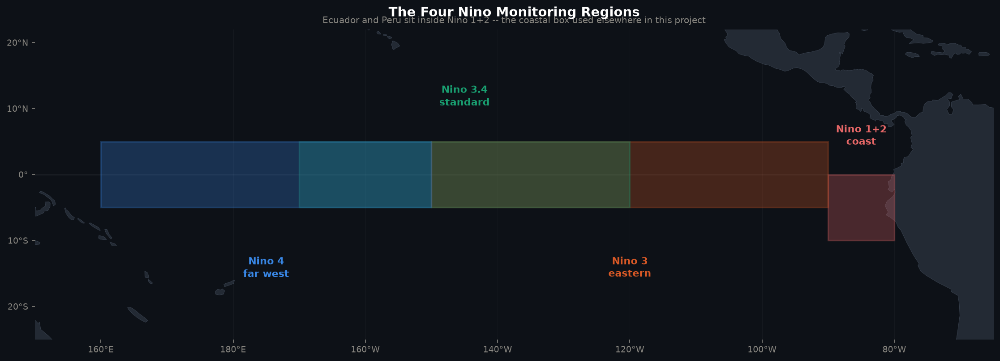
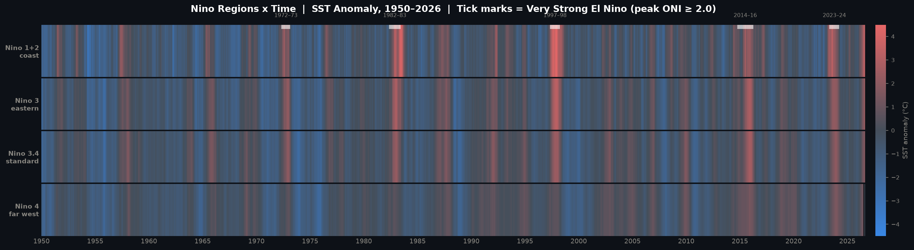
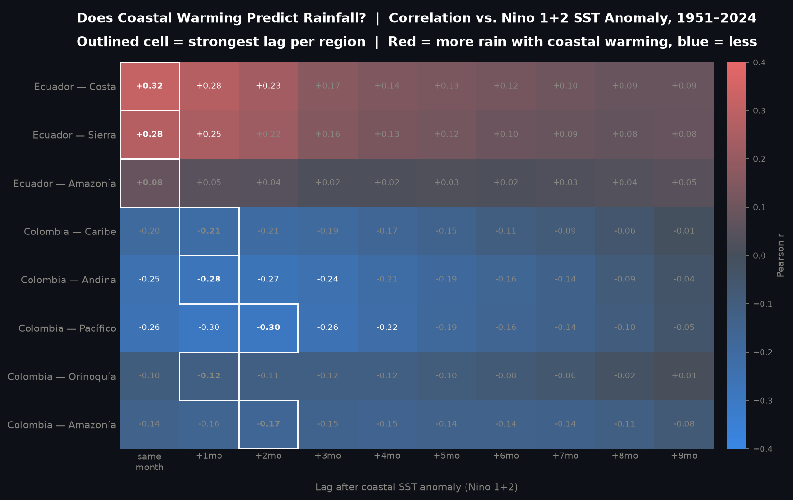

El Nino Mapping — Coastal vs. Basin SST & Rainfall Impact
Each chart has its own time-range control below its title.
⬇ Excel
The Four Niño Monitoring Regions
Niño 1+2 is the only region touching land — it sits against Ecuador & Peru · Click to enlarge

Regional Niño SST Anomalies
°C vs. 1991–2020 average · Gray bands = Very Strong El Niño · Click legend items to show/hide any combination
Source:
Monthly (official)
Weekly (live)
Range:
All
30yr
15yr
5yr
Coastal Gradient
Red = warming led by the coast · Blue = warming led by the far Pacific
Reference:
vs Niño 4
vs Niño 3.4
Range:
All
30yr
15yr
5yr
Coastal SST vs. Ecuador Rainfall
Standardized (z-score) · Rainfall (WorldClim) currently ends
; SST continues to present
Range:
All
30yr
15yr
5yr
Niño Regions × Time
SST anomaly, coast (top) to far west (bottom), 1950–present · Click to enlarge

Does Coastal Warming Predict Rainfall?
Correlation vs. Niño 1+2, by lag · Ecuador wet, Colombia dry · Click to enlarge

✕